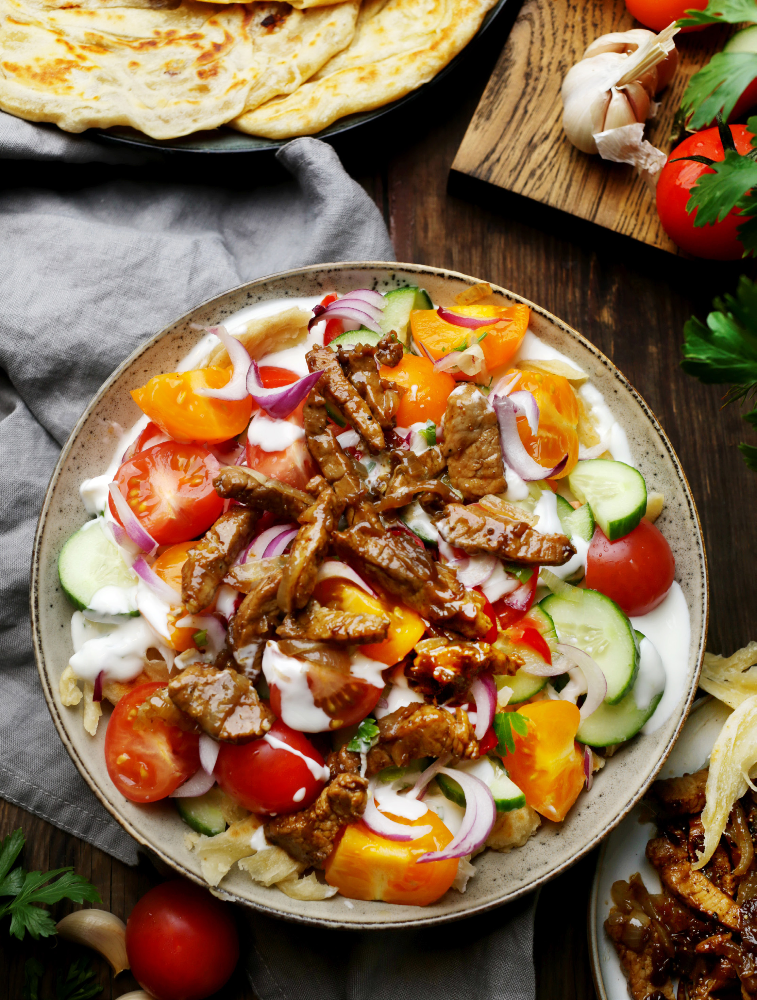

Курутоб — блюдо таджикской кухни. Может показаться, что это самый обычный салат из огурцов и помидоров, но главное отличие этого блюда в его основе: подсушенной лепёшке фатир (её рецепт вы найдёте по ссылке) и кисломолочным соусе с чесноком и зеленью. Подают курутоб в большой деревянной миске. Шарики твёрдого сыра курут кладут в миску и заливают водой, чтобы сыр размяк и стал основой соуса. Этот традиционный сыр сложно найти вне региона, где его делают, поэтому мы рекомендуем заменить его мягким творогом, катыком или другим кисломолочным продуктом вроде простокваши, мацони, йогурта или сметаны. На пропитанную соусом лепёшку в разных вариантах салата выкладывают либо тонко нарезанный сладкий лук, либо репчатый, обжаренный на сливочном или топлёном масле или смеси сливочного и растительного. Затем наступает очередь зелени, свежих овощей и острого перца. Иногда курутоб дополняют кусочками мяса, чаще говядины или баранины, и тогда это уже не просто салат, а полноценное блюдо. Мясо, как правило, используется варёное, мелко нарезанное или разобранное на волокна. Можно мясо нарезать тонкими брусочками и обжарить вместе с луком, добавив специи, соль и свежемолотый чёрный перец.